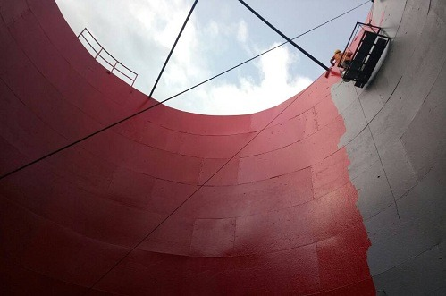
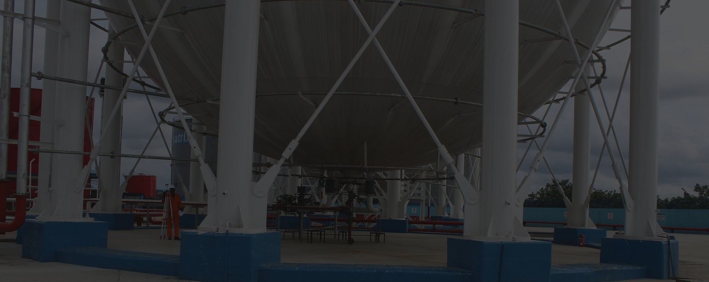
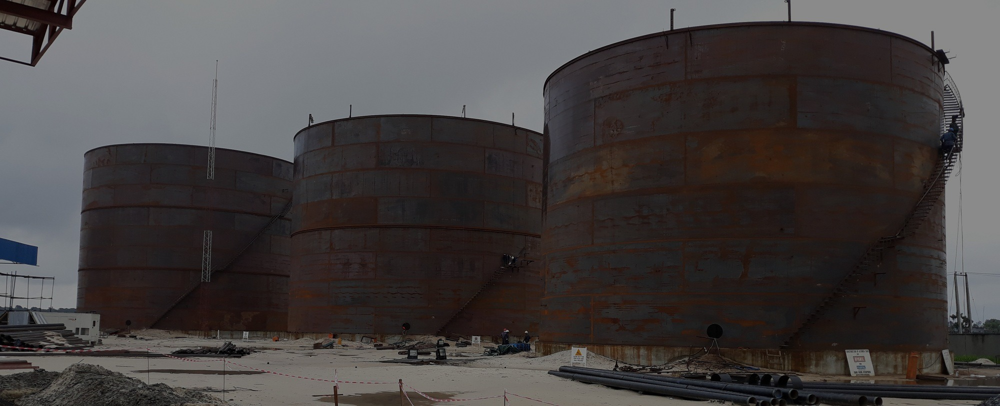
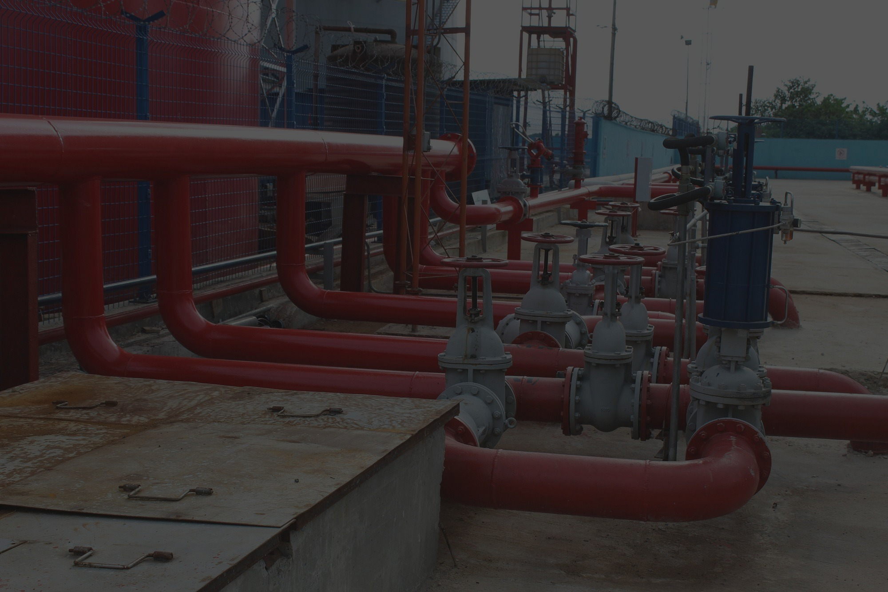
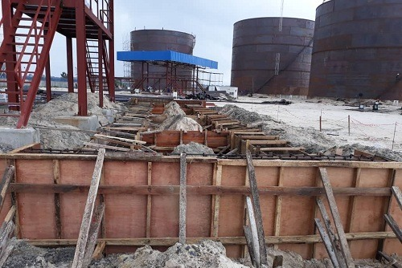
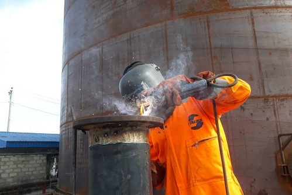

End-to-end technical execution across the full project lifecycle
Stratech Project Solutions Limited provides full-lifecycle EPICC services — from initial feasibility studies and detailed engineering design through to construction, installation, and turnaround maintenance. Every division operates under strict international standards and our unwavering HSE policy.

We provide full-lifecycle engineering design solutions tailored to midstream oil & gas installations, commercial terminals, and industrial structures. Utilizing state-of-the-art software, we convert complex conceptual briefs into buildable blueprints.
Stratech is a market leader in the mechanical fabrication and erection of large-scale liquid storage facilities built in full compliance with API 650 standards. From single-shell tanks to complex LPG terminals, we deliver with precision.


Industrial storage tanks and heavy machinery demand specialized ground preparation and structural civil support to handle massive dead and live loads. Our civil division handles the most challenging ground conditions across Nigeria's coastal and inland terrains.
We supply and install advanced internal and external floating roof systems designed to minimize volatile product evaporation, enhance safety, and protect stored fuels from contamination. Our installation teams are certified and experienced across all major tank configurations.


Minimizing facility downtime while ensuring total operational safety during maintenance turnarounds. Our TAM teams are mobilized rapidly and execute with precision — keeping your assets operational and compliant.